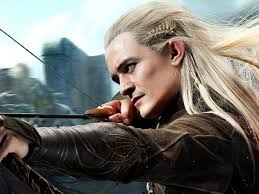
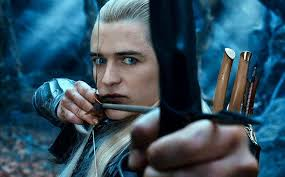
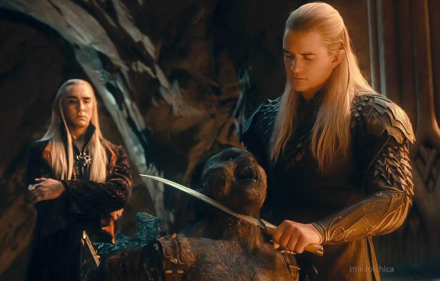

Historia

Legolas es un elfo de la estirpe de los Sindar, hijo de Thranduil, el Rey de los Elfos del Bosque Negro. Fue elegido para representar a los Elfos en la Comunidad del Anillo. Su agilidad y maestría con el arco fueron vitales durante los eventos de la Guerra del Anillo, donde demostró que la lealtad y la amistad pueden superar rivalidades ancestrales, como la que mantenía con el enano Gimli.
Puedes consultar más en la Wiki oficial de Legolas.
Información
Habilidades y Características
- Vista de águila: Capacidad de ver a millas de distancia con total claridad.
- Ligereza de pies: Puede caminar sobre la nieve sin dejar rastro ni hundirse.
- Maestría en Arquería: Precisión letal con el arco largo de los Galadhrim.
- Resistencia Élfica: Capacidad de viajar largas distancias sin dormir.
- Conocimiento de la Naturaleza: Puede interpretar el lenguaje de los árboles y las piedras.
Top 3 Momentos más Icónicos
- Su llegada al Concilio de Elrond y la formación de la Comunidad.
- La competencia de derribo de enemigos contra Gimli en el Abismo de Helm.
- El derribo en solitario de un Mûmakil durante la Batalla de los Campos del Pelennor.
Ficha técnica
| Categoría | Dato Específico |
|---|---|
| Edad | Desconocida (Aprox. 2931 años) |
| Peso | 70 kg |
| Estatura | 1.85 m |
| Primera aparición | La Comunidad del Anillo |
| Debilidades | La llamada del Mar |
| Alias | Hojaverde (Greenleaf) |
Registro de fans
Galería



.jpg)